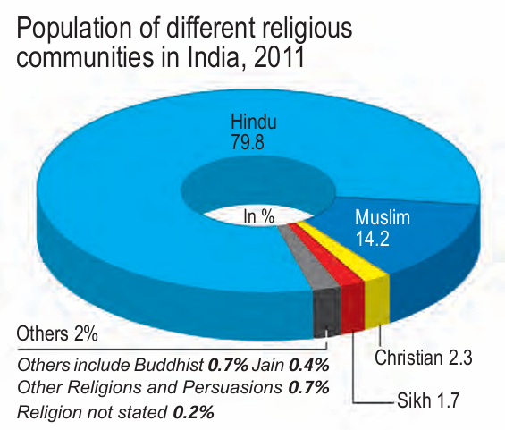

Chapter 3
Interactive Edition 2025
Social diversity is a natural part of every society and, in a democracy, it can be expressed peacefully through political participation. This chapter examines how differences based on gender, religion, and caste shape social and political life in India. It explores how these divisions influence politics and whether such expressions strengthen or challenge democracy. Through this discussion, students learn that acknowledging and managing diversity is essential for a truly inclusive and vibrant democratic system.
The existence of social diversity does not threaten democracy. Political expression of social differences is possible and sometimes quite desirable in a democratic system. In this chapter we apply these ideas to the practice of democracy in India. We look at three kinds of social differences that can take the form of social divisions and inequalities. These are social differences based on gender, religion and caste. In each case we look at the nature of this division in India and how it gets expressed in politics. We also ask whether different expressions based on these differences are healthy or otherwise in a democracy.
Let us begin with gender division. This is a form of hierarchical social division seen everywhere, but is rarely recognised in the study of politics. The gender division tends to be understood as natural and unchangeable. However, it is not based on biology but on social expectations and stereotypes.
Boys and girls are brought up to believe that the main responsibility of women is housework and bringing up children. This is reflected in a sexual division of labour in most families: women do all work inside the home such as cooking, cleaning, washing clothes, tailoring, looking after children, etc., and men do all the work outside the home. It is not that men cannot do housework; they simply think that it is for women to attend to these things. When these jobs are paid for, men are ready to take up these works. Most tailors or cooks in hotels are men. Similarly, it is not that women do not work outside their home. In villages, women fetch water, collect fuel and work in the fields. In urban areas, poor women work as domestic helper in middle class homes, while middle class women work in offices. In fact, the majority of women do some sort of paid work in addition to domestic labour. But their work is not valued and does not get recognition.
The result of this division of labour is that although women constitute half of the humanity, their role in public life, especially politics, is minimal in most societies. Earlier, only men were allowed to participate in public affairs, vote and contest for public offices. Gradually the gender issue was raised in politics. Women in different parts of the world organised and agitated for equal rights. There were agitations in different countries for the extension of voting rights to women. These agitations demanded enhancing the political and legal status of women and improving their educational and career opportunities. More radical women’s movements aimed at equality in personal and family life as well. These movements are called feminist movements.
Political expression of gender division and political mobilisation on this question helped to improve women’s role in public life. We now find women working as scientists, doctors, engineers, lawyers, managers and college and university teachers which were earlier not considered suitable for women. In some parts of the world, for example in Scandinavian countries, such as Sweden, Norway and Finland, the participation of women in public life is very high.
In our country, women still lag much behind men despite some improvement since Independence. Ours is still a male-dominated, patriarchal society. Women face disadvantage, discrimination and oppression in various ways:
1. The literacy rate among women is only 54 per cent compared with 76 per cent among men. Similarly, a smaller proportion of girl students go for higher studies. When we look at school results, girls perform as well as boys, if not better in some places. But they drop out because parents prefer to spend their resources for their boys’ education rather than spending equally on their sons and daughters.
2. No wonder the proportion of women among the highly paid and valued jobs, is still very small. On an average, an Indian woman works one hour more than an average man every day. Yet much of her work is not paid and therefore, often not valued.
3.The Equal Remuneration Act, 1976 provides that equal wages should be paid to equal work. However in almost all areas of work, from sports and cinema, to factories and fields, women are paid less than men, even when both do exactly the same work.
4. In many parts of India, parents prefer to have sons and find ways to have the girl child aborted before she is born. Such sex-selective abortion led to a decline in child sex ratio (number of girl children per thousand boys) in the country to merely 919. This ratio has fallen below 850 or even 800 in some States.
There are reports of various kinds of harassment, exploitation and violence against women. Urban areas have become particularly unsafe for women. They are not safe even within their own home from beating, harassment and other forms of domestic violence.
All this is well known. Yet issues related to women’s well being or otherwise are not given adequate attention. This has led many feminists and women’s movements to the conclusion that unless women control power, their problems will not get adequate attention. One way to ensure this is to have more women as elected representatives.
In India, the proportion of women in legislature has been very low. For example, the percentage of elected women members in Lok Sabha has touched 14.36 per cent of its total strength for the first time in 2019. Their share in the state assemblies is less than 5 per cent. In this respect, India is among the bottom group of nations in the world. India is behind the averages for several developing countries of Africa and Latin America. In the government, cabinets are largely all-male even when a woman becomes the Chief Minister or the Prime Minister.
One way to solve this problem is to make it legally binding to have a fair proportion of women in the elected bodies. This is what the Panchayati Raj has done in India. One-third of seats in local government bodies – in panchayats and municipalities – are now reserved for women. Now there are more than 10 lakh elected women representatives in rural and urban local bodies.
Women’s organizations and activists had been demanding a similar reservation of at least one third of seats in Lok Sabha and State Assemblies for women. A bill with this proposal was pending before the Parliament for many decades. In 2023, Nari shakti Vandan Adhiniyam (Womens’ Reservation Act, 2023) has been passed which will give 33 percent reservation of seats for women in Lok Sabha, State Legislative Assemblies and also Delhi Assembly.
Gender division is an example that some form of social division needs to be expressed in politics. This also shows that disadvantaged groups do benefit when social divisions become a political issue. Do you think that women could have made the gains we noted above if their unequal treatment was not raised in the political domain?
Let us now turn to a very different kind of social division, the division based on religious differences. This division is not as universal as gender, but religious diversity is fairly widespread in the world today. Many countries including India have in their population, followers of different religions. As we noticed in the case of Northern Ireland, even when most of the people belong to the same religion, there can be serious differences about the way people practice that religion. Unlike gender differences, the religious differences are often expressed in the field of politics.
Consider the following:
1. Gandhiji used to say that religion can never be separated from politics. What he meant by religion was not any particular religion like Hinduism or Islam but moral values that inform all religions. He believed that politics must be guided by ethics drawn from religion.
2.Human rights groups in our country have demanded that the Government should take special steps to prevent communal riots and protect religious minorities.
3.Women’s movement has argued that family laws of all religions discriminate against women. So they have demanded that government should change these laws to make them more equitable.
All these instances involve a relationship between religion and politics. But they do not seem very wrong or dangerous. Ideas, ideals and values drawn from different religions can and perhaps should play a role in politics. People should be able to express in politics their needs, interests and demands as a member of a religious community. Those who hold political power should sometimes be able to regulate the practice of religion so as to prevent discrimination and oppression. These political acts are not wrong as long as they treat every religion equally.
The problem begins when religion is seen as the basis of the nation. The example of Northern Ireland in Chapter 3 shows the dangers of such an approach to nationalism. The problem becomes more acute when religion is expressed in politics in exclusive and partisan terms, when one religion and its followers are pitted against another. This happens when beliefs of one religion are presented as superior to those of other religions, when the demands of one religious group are formed in opposition to another and when state power is used to establish domination of one religious group over the rest. This manner of using religion in politics is communal politics.
Communal politics is based on the idea that religion is the principal basis of social community. Communalism involves thinking along the following lines. The followers of a particular religion must belong to one community. Their fundamental interests are the same. Any difference that they may have is irrelevant or trivial for community life. It also follows that people who follow different religions cannot belong to the same social community. If the followers of different religions have some commonalities these are superficial and immaterial, their interests are bound to be different and involve a conflict. In its extreme form, communalism leads to the belief that people belonging to different religions cannot live as equal citizens within one nation. Either, one of them has to dominate the rest or they have to form different nations. This belief is fundamentally flawed. People of one religion do not have the same interests and aspirations in every context. Everyone has several other roles, positions and identities. There are many voices inside every community. All these voices have a right to be heard. Therefore any attempt to bring all followers of one religion together in context other than religion is bound to suppress many voices within that community.
Communalism can take various forms in politics:
1. The most common expression of communalism is in everyday beliefs. These routinely involve religious prejudices, stereotypes of religious communities and belief in the superiority of one’s religion over other religions. This is so common that we often fail to notice it, even when we believe in it.
2. A communal mind often leads to a quest for political dominance of one’s own religious community. For those belonging to majority community, this takes the form of majoritarian dominance. For those belonging to the minority community, it can take the form of a desire to form a separate political unit.
3. Political mobilisation on religious lines is another frequent form of communalism. This involves the use of sacred symbols, religious leaders, emotional appeal and plain fear in order to bring the followers of one religion together in the political arena. In electoral politics, this often involves special appeal to the interests or emotions of voters of one religion in preference to others.
4. Sometimes communalism takes its most ugly form of communal violence, riots and massacre. India and Pakistan suffered some of the worst communal riots at the time of the Partition. The post-Independence period has also seen large scale communal violence.
Communalism was and continues to be one of the major challenges to democracy in our country. The makers of our Constitution were aware of this challenge. That is why, they chose the model of a secular state. This choice was reflected in several constitutional provisions that we studied last year:
1. There is no official religion for the Indian state. Unlike the status of Buddhism in Sri Lanka, that of Islam in Pakistan and that of Christianity in England, our Constitution does not give a special status to any religion.
2. The Constitution provides to all individuals and communities freedom to profess, practice and propagate any religion, or not to follow any.
3. The Constitution prohibits discrimination on grounds of religion.
4. At the same time, the Constitution allows the state to intervene in the matters of religion in order to ensure equality within religious communities. For example, it bans untouchability.
Understood in this sense, secularism is not just an ideology of some parties or persons. This idea constitutes one of the foundations of our country. Communalism should not be seen as a threat to some people in India. It threatens the very idea of India. That is why communalism needs to be combated. A secular Constitution like ours is necessary but not sufficient to combat communalism. Communal prejudices and propaganda need to be countered in everyday life and religion- based mobilisation needs to be countered in the arena of politics.
We have seen two instances of the expression of social divisions in the arena of politics, one largely positive and the other largely negative. Let us turn to our final case, that of caste and politics, that has both positive and the negative aspects.
Unlike gender and religion, caste division is special to India. All societies have some kind of social inequality and some form of division of labour. In most societies, occupations are passed on from one generation to another. Caste system is an extreme form of this. What makes it different from other societies is that in this system, hereditary occupational division was sanctioned by rituals. Members of the same caste group were supposed to form a social community that practiced the same or similar occupation, married within the caste group and did not eat with members from other caste groups.
Caste system was based on exclusion of and discrimination against the 'outcaste' groups. They were subjected to the inhuman practice of untouchability about which you have studied in Class IX. That is why political leaders and social reformers like Jotiba Phule, Gandhiji, B.R. Ambedkar and Periyar Ramaswami Naicker advocated and worked to establish a society in which caste inequalities are absent.
Partly due to their efforts and partly due to other socio-economic changes, castes and caste system in modern India have undergone great changes. With economic development, large scale urbanisation, growth of literacy and education, occupational mobility and the weakening of the position of landlords in the villages, the old notions of caste hierarchy are breaking down. Now, most of the times, in urban areas it does not matter much who is walking along next to us on a street or eating at the next table in a restaurant. The Constitution of India prohibited any caste-based discrimination and laid the foundations of policies to reverse the injustices of the caste system. If a person who lived a century ago were to return to India, she would be greatly surprised at the change that has come about in the country. Yet caste has not disappeared from contemporary India. Some of the older aspects of caste have persisted. Even now most people marry within their own caste or tribe. Untouchability has not ended completely, despite constitutional prohibition. Effects of centuries of advantages and disadvantages continue to be felt today. The caste groups that had access to education under the old system have done very well in acquiring modern education as well. Those groups that did not have access to education or were prohibited from acquiring it have naturally lagged behind. That is why there is a disproportionately large presence of 'upper caste' among the urban middle classes in our country. Caste continues to be closely linked to economic status.
As in the case of communalism,
casteism is rooted in the belief
that caste is the sole basis of social
community. According to this way
of thinking, people belonging to
the same caste belong to a natural
social community and have the
same interests which they do not
share with anyone from another
caste. As we saw in the case of
communalism, such a belief is not
borne out by our experience. Caste
is one aspect of our experience but it
is not the only relevant or the most
important aspect.
Caste can take various forms
in politics:
1. When parties choose candidates
in elections, they keep in mind the
caste composition of the electorate
and nominate candidates from
different castes so as to muster
necessary support to win elections.
When governments are formed,
political parties usually take care that
representatives of different castes and
tribes find a place in it.
2. Political parties and candidates
in elections make appeals to caste
sentiment to muster support. Some
political parties are known to favour
some castes and are seen as their
representatives.
3. Universal adult franchise and
the principle of one-person-one-vote compelled political leaders to gear up
to the task of mobilising and securing
political support. It also brought new
consciousness among the people of
castes that were hitherto treated as
inferior and low.
The focus on caste in politics
can sometimes give an impression
that elections are all about caste and
nothing else. That is far from true.
Just consider these:
1. No parliamentary constituency
in the country has a clear majority
of one single caste. So, every
candidate and party needs to win the
confidence of more than one caste
and community to win elections.
2. No party wins the votes of all
the voters of a caste or community.
When people say that a caste is a
'vote bank' of one party, it usually
means that a large proportion of the voters from that caste vote for
that party.
3. Many political parties may put
up candidates from the same caste
(if that caste is believed to dominate
the electorate in a particular
constituency). Some voters have
more than one candidate from their
caste while many voters have no
candidate from their caste.
4. The ruling party and the sitting
MP or MLA frequently lose elections
in our country. That could not
have happened if all castes and
communities were frozen in their
political preferences.
Clearly, while caste matters in
electoral politics, so do many other
factors. The voters have strong
attachment to political parties which
is often stronger than their attachment
to their caste or community. People
within the same caste or community
have different interests depending
on their economic condition. Rich
and poor or men and women from
the same caste often vote very
differently. People’s assessment of
the performance of the government
and the popularity rating of the
leaders matter and are often decisive
in elections.
We have so far looked at what caste
does to politics. But it does not mean
that there is only a one-way relation
between caste and politics. Politics
too influences the caste system and
caste identities by bringing them
into the political arena.
Thus, it is not politics that gets caste-ridden, it is the caste that gets politicised. This
takes several forms:
1. Each caste group tries to become
bigger by incorporating within it
neighbouring castes or sub-castes
which were earlier excluded from it.
2. Various caste groups are required
to enter into a coalition with other
castes or communities and thus enter
into a dialogue and negotiation.
3. New kinds of caste groups
have come up in the political arena
like 'backward' and 'forward'
caste groups.
Thus, caste plays different
kinds of roles in politics. In some
situations, expression of caste
differences in politics gives many
disadvantaged communities the
space to demand their share of power. In this sense, caste politics
has helped people from Dalits and
OBC castes to gain better access to
decision making. Several political
and non-political organisations have
been demanding and agitating for
an end to discrimination against
particular castes, for more dignity
and more access to land, resources
and opportunities.
At the same time, exclusive
attention to caste can produce
negative results as well. As in the
case of religion, politics based on
caste identity alone is not very
healthy in a democracy. It can
divert attention from other pressing
issues like poverty, development
and corruption. In some cases, caste
division leads to tensions, conflict
and even violence.
The Census of India records the religion of each and every Indian after every ten years. The person who fills the Census form visits every household and records the religion of each member of that household exactly the way each person describes it. If someone says she has 'no religion' or that he is an 'atheist', this is exactly how it is recorded. Thus we have reliable information on the proportion of different religious communities in the country and how it has changed over the years. The pie chart below presents the population proportion of six major religious communities in the country. Since Independence, the total population of each community has increased substantially but their proportion in the country's population has not changed much. In percentage terms, the population of the Hindus, Jains and Christians has declined marginally since 1961. The proportion of Muslim, Sikh and Buddhist population has increased slightly. There is a common but mistaken impression that the proportion of the Muslims in the country's population is going to overtake other religious communities. Expert estimates done for the Prime Minister's High Level Committee (popularly known as Sachar Committee) show that the proportion of the Muslims is expected to go up a little, by about 3 to 4 per cent, in the next 50 years. It proves that in overall terms, the population balance of different religious communities is not likely to change in a big way. The same is true of the major caste groups. The Census of India counts two social groups: the Scheduled Castes and the Scheduled Tribes. Both these broad groups include hundreds of castes or tribes whose names are listed in an official Schedule. Hence the prefix 'Scheduled' in their name. The Scheduled Castes, commonly known as Dalits, include those that were previously regarded as 'outcaste' in the Hindu social order and were subjected to exclusion and untouchability. The Scheduled Tribes, often referred to as Adivasis, include those communities that led a secluded life usually in hills and forests and did not interact much with the rest of society. In 2011, the Scheduled Castes were 16.6 per cent and the Scheduled Tribes were 8.6 per cent of the country's population. The Census does not yet count the Other Backward Classes, the group we discussed in Class IX. Hence there are some differences about their proportion in the country's population. The National Sample Survey of 2004–05 estimates their population to be around 41 per cent. Thus the SC, ST and the OBC together account for about two-thirds of the country's population and about three-fourths of the Hindu population.
Caste inequality today
Caste is an important source of economic inequality because it regulates
access to resources of various kinds. For example, in the past, the so-called
'untouchable' castes were denied the right to own land, while only the so-called
'twice born' castes had the right to education. Although this kind of explicit and
formalised inequality based on caste is now outlawed, the effects of centuries of
accumulated advantages and disadvantages continue to be felt. Moreover, new
kinds of inequalities have also developed.
The relationship between caste and economic status has certainly changed a
lot. Today, it is possible to find very rich and very poor people in every caste,
whether 'low' or 'high'. This was not true even twenty or thirty years ago – it
was very rare indeed to find rich people among the 'lowest' castes. However,
as this evidence from the National Sample Survey shows, caste continues to be
very strongly linked to economic status in many important ways:
1. The average economic status (measured by criteria like monthly
consumption expenditure) of caste groups still follows the old hierarchy –
the 'upper' castes are best off, the Dalits and Adivasis are worst off, and the
backward classes are in between.
2. Although every caste has some poor members, the proportion living in
extreme poverty (below the official 'poverty line') is much higher for the lowest
castes and much lower for the upper castes, with the backward classes once
again in between.
3. Although every caste has some members who are rich, the upper castes are
heavily over-represented among the rich while the lower castes are severely
under-represented.
Answer the following questions to test your understanding of gender, religion and caste:
A. One religion is superior to that of others.
B. People belonging to different religions can live together happily as equal citizens.
C. Followers of a particular religion constitute one community.
D. State power cannot be used to establish the domination of one religious group over others.
Which of the statements are correct?
Match the items from List I with the correct items from List II:
Fill in the blanks with appropriate words:
Social divisions based on are peculiar to India.
Answer the following questions to develop your critical thinking about gender, religion and caste: